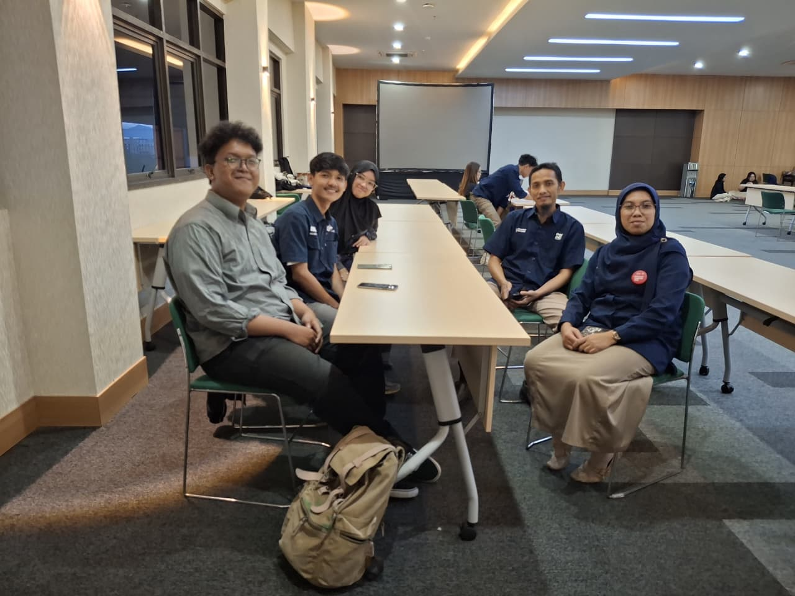
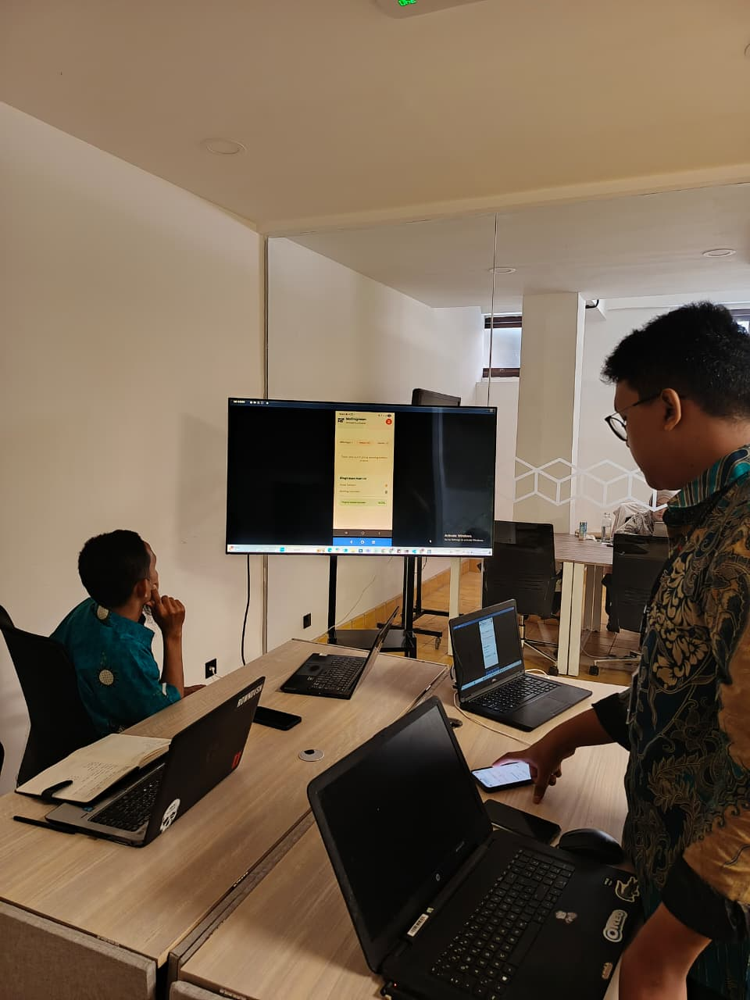

2025 – 2026
PT Pos Indonesia (Persero)
Mobile Front-End Developer Intern
Berkontribusi dalam pengembangan aplikasi mobile Mailing Room menggunakan Flutter dan Dart. Berperan sebagai Front-End Developer dalam tim pengembangan.
- Flutter
- Dart
- UI Development
- Teamwork


 GitHub
GitHub Trello
Trello Android Studio
Android Studio